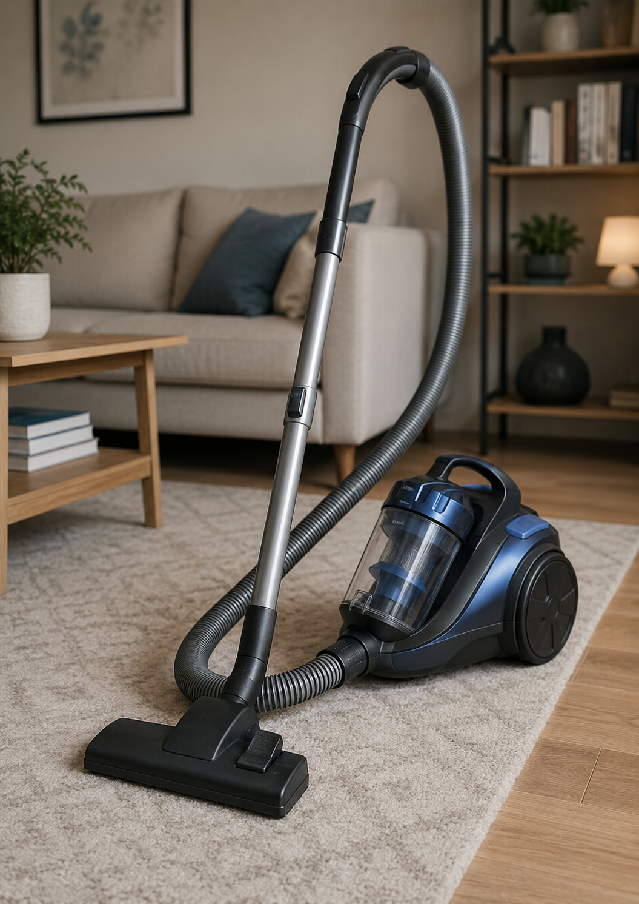
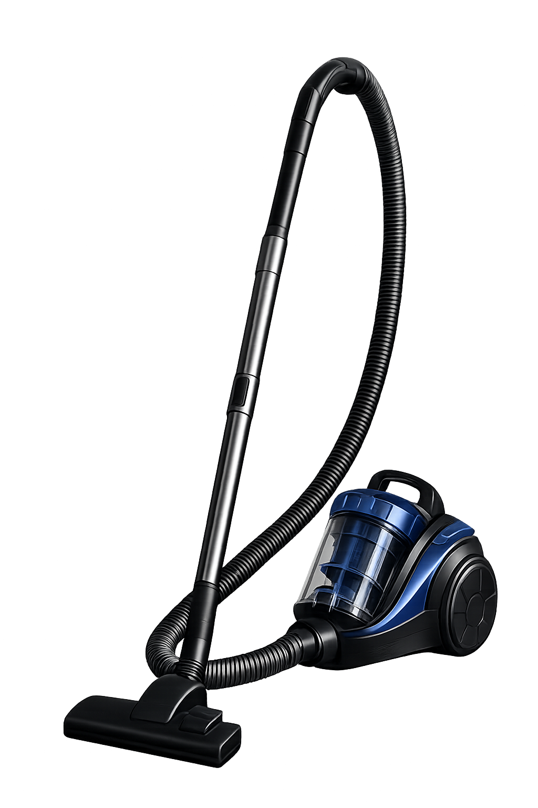

Промтзилла
Как удалить фон с фотографии с помощью нейросети
Загрузи фото — Nano Banana PRO аккуратно удалит фон и оставит объект на прозрачном фоне, готовым для использования в дизайне.
📋 Пошаговая инструкция
- 1Перейди на study24.ai и открой инструмент Nano Banana PRO
- 2Нажми на иконку скрепки и загрузи своё фото — чем чётче контраст между объектом и фоном, тем лучше результат
- 3Скопируй промт ниже и вставь в поле ввода
- 4Нажми отправить и подожди 10–20 секунд — нейросеть удалит фон
- 5Если осталась белая кайма — добавь к промту: «убери белую кайму по краям объекта»
- 6Скачай результат в формате PNG с прозрачным фоном
Пример результата

ДоИсходное фото

ПослеФон удалён
Промт
RU
Загружаю фотографию. Удали фон полностью и сделай его прозрачным. Требования: — Убрать фон полностью — оставить только основной объект (человек, предмет, продукт) — Края обрезать аккуратно и чётко — без размытия, без артефактов, без белой каймы — Сложные элементы (волосы, мех, тонкие детали) обработать тщательно — Объект не изменять — цвет, форму и детали сохранить точно — Результат: объект на прозрачном фоне, готов для использования в дизайне
EN
I'm uploading a photo. Remove the background completely and make it transparent. Requirements: — Remove the background entirely — keep only the main subject (person, object, product) — Cut edges cleanly and precisely — no blur, no artifacts, no white fringe — Handle complex elements carefully (hair, fur, fine details) — Do not alter the subject — preserve color, shape and details exactly — Result: subject on transparent background, ready for use in design
Теги